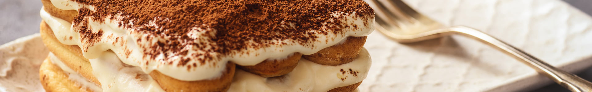

Tiramisú

- 1 cup strong brewed coffee, cooled
- 3 tablespoons coffee liqueur (optional)
- 3 large eggs, separated
- 1/2 cup granulated sugar
- 1 cup mascarpone cheese
- 1 cup heavy cream
- Gluten-free ladyfingers (about 20)
- Unsweetened cocoa powder (for dusting)
- Prepare the coffee mixture: In a shallow dish, combine the cooled coffee and coffee liqueur. Set aside.
- Make the mascarpone mixture: In a bowl, beat the egg yolks and sugar until pale. Add the mascarpone and mix until smooth.
- Whip the egg whites: In a separate bowl, beat the egg whites until stiff peaks form. Gently fold the egg whites into the mascarpone mixture.
- Whip the cream: In another bowl, whip the heavy cream until soft peaks form, then fold it into the mascarpone mixture.
- Layer the tiramisù: Quickly dip each ladyfinger in the coffee mixture and layer them in a dish. Spread half of the mascarpone mixture on top. Repeat with another layer of dipped ladyfingers and the remaining mascarpone mixture.
- Chill: Cover and refrigerate for at least 4 hours or overnight.
- Serve: Dust with cocoa powder before serving.